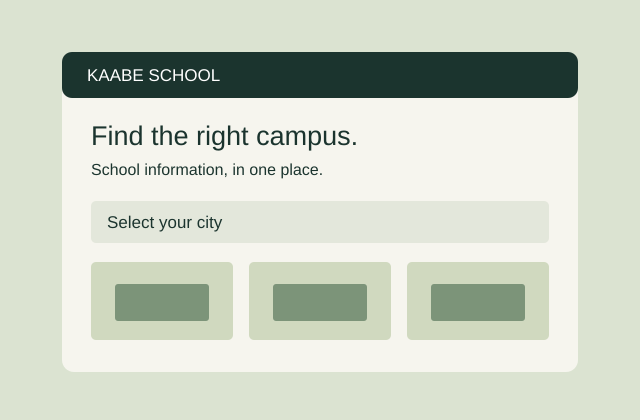

Kaabe School Platform
A proposed platform to help parents find campus information and send admission inquiries for the right grade and location.
Read project notes
Our group has finished the proposal. The website has not been built yet. The planned features include campus information and an admission inquiry form.